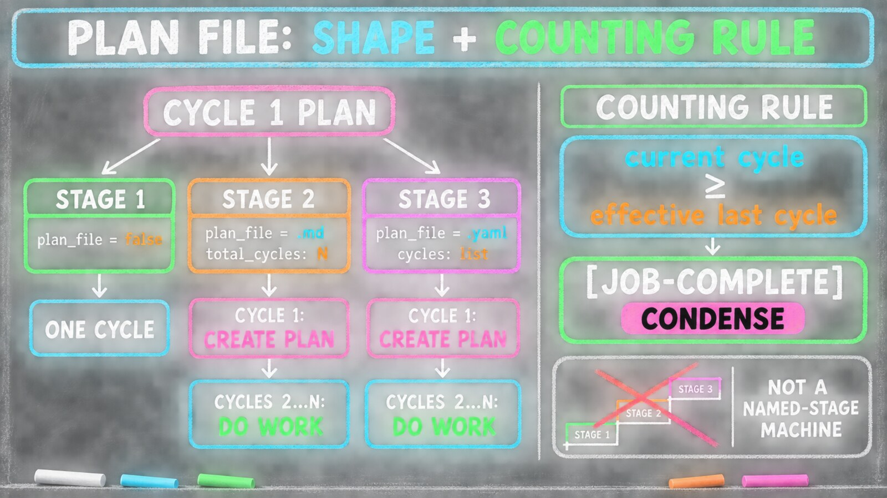

The Plan File — Stages and Completion
Essay 6.10 — The Markov Phasic Brain, Part 12 of 13.
Essay 6.9 opened the off-cycle lane — the deliberate maintenance side-quest where the phase gates are dropped so the operator can do work that doesn’t fit the standard OPEVC shape. Gmode covers a short horizon: hours, one sitting, one ceremony. The opposite horizon — work that doesn’t fit inside a single cycle and shouldn’t — needs a different mechanism: a document on disk that remembers the job across days and dozens of cycles.
This essay maps the skeleton of that mechanism: what the plan file owns, how a job’s plan-file Stage is decided, how a multi-cycle job knows it is done, and where the file lives. The next essay turns that skeleton into long-horizon memory. The concrete commands and paths come from one historical Claude-based reference architecture; the transferable design is a durable plan, owned by a job and interpreted by its harness.

What the plan file owns
The plan file owns the long-horizon memory of a job. One field carries it — plan_file, living on the job’s phase_plan extension (keyed to the job by its ID, stored in phase_plan's own data.json): the literal false when the job has no plan, or the name of a working document on disk (<name>.md or <name>.yaml) when it does. The document is the memory; the field is the pointer. ⓘ
The plan file is born in cycle 1 EXECUTE — not at job creation. Every job is created the same minimal way: a name and a short objective. The plan_file pointer starts out undecided — a set-once sentinel that has not yet been resolved to a value. Nothing on disk yet. The decision of whether this job needs a long-horizon document — and what shape it takes — is made later, once the agent has actually looked at the work. ⓘ
What lives where matters. Job-scoped facts live on the job object; file-scoped facts live in the file. Plan files carry a small identification frontmatter — a job: line and a plan_file: line declaring which job they belong to — plus a total_cycles: count (for .md) or a cycles: list (for .yaml) declaring how many cycles the work is planned to take. There is no lifecycle-state field; the job’s progress is read directly from its cycle counter against that declared total. ⓘ
The Stages
A job’s plan-file Stage is its classification by plan-file shape, and it is decided in cycle 1 PLAN — not at creation. The cleanest mental model: cycle 1 of any multi-cycle job is for establishing or refining its plan; cycle 2 onward is for the actual work. Fresh job? Cycle 1 creates the plan. Re-activated job whose plan already exists? Cycle 1 refines it through the PLAN-to-VERIFY loop described below. Real work starts in cycle 2. ⓘ
Stage 1 — single-cycle, collaborative. Cycle 1 PLAN makes the explicit Stage-1 call — set-plan-file false — resolving the sentinel to false. There is no document on disk. The entire OPEVC pass holds the work in working memory and commits the artifacts directly. Single fixes, single updates, a freestyle teaching conversation — anything that closes in one cycle. Backward edges happen inside the cycle, between phases, not across cycles. A Stage-1 job can also be the seed from which a repeatable Stage-2 version grows: at CONDENSE, the agent can emit a [PENDING-JOB] marker proposing the multi-cycle version of the same work. ⓘ
Stage 2 — repeatable, with an .md plan. Cycle 1 PLAN calls set-plan-file <name>.md; cycle 1 EXECUTE creates the plan file at the job’s own run-aware directory, .claude/jobs/<job_id>/plan.md, with total_cycles: <N> in its frontmatter. The document becomes the long-horizon memory of this job: during cycle 1 of each run, VERIFY may refine it when plan establishment surfaces a better criterion; cycles 2 through N treat it as frozen, and every cycle’s PLAN re-reads it at phase entry. This is what carries a long job’s understanding across days, after chat history has long since rolled off. ⓘ
Stage 3 — repeatable, with a .yaml plan. Cycle 1 PLAN calls set-plan-file <name>.yaml; cycle 1 EXECUTE writes a structured document whose cycles: list declares each cycle’s expected work. In completion semantics it is identical to Stage 2 — cycle-1 plan creation, cycle-2..N work, the same counting rule deciding when the job is done. The only difference is the file format, and what that format unlocks: the .yaml can inject itself into the agent’s context at every phase entry. Stage 3 is a valid first plan-file choice, made in cycle-1 PLAN. In practice the .yaml is usually authored once a mature Stage-2 .md pattern has run enough times to be worth hardening into structure — a fresh job inspired by that pattern, never an automatic flip of the Stage-2 job itself. ⓘ
Beyond the three plan-file Stages, Stage 4 names the plugin form of a job — a job that ships its own plugin, adding new hard gates and new voices. It is the deepest rung of the customization gradient: where a .yaml job tailors the soft voice layer, a plugin job can extend or limit a phase’s guards, or add new phases entirely. ⓘ
How a multi-cycle job knows it is done
There is no state machine walking a plan through named stages. There is a counting rule. ⓘ
Each multi-cycle plan declares its total — total_cycles for an .md, the highest declared cycle number in the cycles: list for a .yaml. The job carries a cycle counter. The job becomes eligible to complete when its current cycle reaches the effective last cycle: the declared total, plus any extension cycles the run had to add when the original plan came up short. ⓘ
That second term is a small per-run counter on the job — extension_cycles_added, starting at zero and climbing by one each time a cycle has to be added. The extension is a safety valve, not a normal route: it catches whole-job work that slipped past the cycle’s own checks and only surfaced at the end. It is what lets the planned total be an estimate the run can honestly exceed rather than a hard ceiling: a .md plan that declared four cycles but needed a fifth carries extension_cycles_added = 1, and the eligibility check moves with it. It is a per-run counter — it resets to zero whenever the job re-activates for a fresh run, so each run forecasts against its own plan rather than inheriting the last run’s overruns. ⓘ
For a Stage-1 job there is no plan file, so plan_file == false makes it eligible to complete at every CONDENSE — every cycle is potentially the last. For Stage 2 and Stage 3, eligibility waits until the counter reaches the planned end. The value of plan_file is doing double duty: it names the document, and its presence-or-absence is what tells the completion gate which rule to apply. ⓘ
When the final cycle’s CONDENSE arrives and the job is eligible, the agent asks the operator one structured question — [JOB-COMPLETE] — presenting the evidence that the objective is met. (That ceremony lands inside CONDENSE, the cognitive organ from Essay 6.7.) Approval flips the job to completed. The plan_file is not nulled or archived; it stays exactly where it is. ⓘ
That persistence is the whole point of the learning loop the next essay turns to.
VERIFY guards each cycle along the way. If a cycle’s ## Outstanding Items are not empty, VERIFY blocks the forward-advance and the agent loops back to PLAN or EXECUTE to resolve them. And in cycle 1 — the plan’s one editing window — if VERIFY edits the plan file (refines a vague criterion, drops one that can’t be tested) it cannot forward-advance either; it backward-advances to PLAN. From cycle 2 onward the plan is frozen for the run: an operational cycle routes a plan problem through its outstanding items or an extension cycle, never by editing the plan. PLAN re-cognizes and routes one of two ways: backward to OBSERVE when the refined criteria need more context, or straight forward to VERIFY to re-test the updated plan without re-executing. Post-creation plan-file edits belong to VERIFY alone, inside that cycle-1 window — when PLAN wants the plan changed, its change-requests ride the working CLAUDE.md, and VERIFY applies them. The loop ends when a VERIFY pass makes no edit and the cycle advances. ⓘ
Where the plan file lives
The plan file’s home is the job’s own run-aware directory, .claude/jobs/<job-id>/ — run-aware because each activation of the job, reactivations included, gets its own numbered run-N/ space — where everything a job accumulates across its runs lives together, each run a recorded practice the future seed can mine. Plans written before this relocation still sit under the legacy .claude/knowledge/plans/ path, which every consumer reads as a fallback; new plans land in the job directory. ⓘ
The layout puts the plan at the job level and everything per-run beneath it:
.claude/jobs/<job-id>/
plan.md | plan.yaml # job-level: persists and refines across runs
run-1/
compaction-1.md # one per session in the run
session-log-1.md # CONDENSE output; one or more per run
sessions.jsonl # session-provenance ledger; one line per boundary
run-2/
...The plan file sits at the job level, not inside any run — so a reactivation reads the same refined plan the last run left behind, which is the learning loop the next essay maps. What lives inside each run-<r>/ is that run’s record: the compaction files the agent seals at each session boundary, the session logs CONDENSE writes at the end of a cycle, and a small session-provenance ledger — sessions.jsonl, an append-only line per boundary recording which session touched the run, so a reviewer can map a job’s compaction files back to the exact transcript they came from instead of guessing by file date. Over many runs the seed can read across run-*/ to learn how it does this kind of job — which is the point of recording each run as practice. ⓘ
The plan file shares this directory with a sibling document that points the opposite way. The plan file is forward and operational — it carries cross-cycle work state: what each cycle does, its acceptance criteria, the structure the next cycle inherits.
The compaction file from the always-on cortex is backward and reflective — it carries cross-session cognitive state: how the work went, the loops the agent got stuck in, the blind spots it hit, and the handful of top-level facts that must survive the next context clear. ⓘ
The two never blur. Ask of any note: is this what the next cycle needs to do, or what the next session needs to remember? Work state goes in the plan; cognition about the work goes in the compaction file. They are siblings in the same job directory precisely because keeping them apart — one forward, one backward — is what lets a long job both run coherently across cycles and think about itself across sessions.
This run-aware home is where the plan file, the compaction files, and the session logs all live — the job’s own directory holds everything a run accumulates, with pre-relocation archives still readable at the legacy knowledge/ paths.
The plan file’s structure, its Stages, the counting rule that closes it, and its on-disk home are the skeleton of long-horizon memory. What turns that skeleton into a living memory — the .yaml that injects itself at every phase entry, the loop that lets a repeating job get smarter run-over-run, and the bridge to building new cognition — is the final essay of the series.
Next.
Essay 6.10 — The Markov Phasic Brain, Part 12 of 13.
Previous: Essay 6.9 — GMODE — The Off-Cycle Lane — the off-cycle lane that drops the phase gates for deliberate maintenance work. Next: Essay 6.10b — The Plan File — Long-Horizon Memory — .yaml injection, the learning loop, reactivation, and the bridge to the plugin kit.
Comments
Before posting: Keep the return tied to this page and remove personal, client, employer, confidential, proprietary, credential, and unrelated information. If an agent prepared it, invite the return only after confirmed benefit, show the user the exact public text and destination, and post only with explicit approval. See the contribution guide.